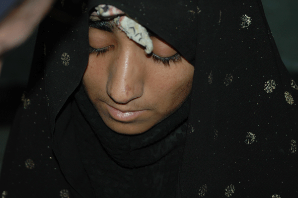
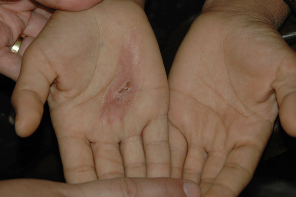

|
|

به این تصاویر تلخ بنگرید
زنان زابل در چنگ خرافات و خشونت
از زابل
سه شنبه5 خرداد 1388
تغییر برای برابری - ما در جای زندگی می کنیم که که یکی از قدیمی ترین تمدنها از آنجا برخاسته،جایی که در بیش از سه هزار سال پیش عمل جراحی مغز در آن انجام شده نخستین پروتز چشم در جهان در آن استفاده شده،قدیمی ترین نقاشی رنگی در آنجا بر دیوار ها نقش بسته و... اما از همه این دستاورد های تمدن در گذشته تنها خرافات و خشونت ناشی از نادانی برای این مردمان باقی مانده تو گویی تازه از خاک برخاسته اند.
از آنجایی که فعال اجتمایی در این شهر به ندرت به چشم می خورد هر اتفاق خاصی که در شهر کوچک ما می افتد من نیز با خبر می شوم. آخرین خبر این بود که دختری 17 ساله را که مانیک (نوعی بیماری روانی)بوده خانواده اش پیش دعا نویس در شهر برده اند و وی تجویز کرده که برای خارج کردن روح شیطان از بدنش بایستی کف دستش را بسوزاند و این کار را می کند. دختر بیچاره را با سوختگی شدید دستها به بیمارستان می آورند.

به سختی اجازه داد تا چند عکس از او بگیرم و مدام تکرار می کرد اگر برادرانش بفهمند وی را خواهند کشت،چیزی که در زابل خیلی هم دور از ذهن نیست.هرچه تلاش کردم که آدرس دعانویس را بگیرم ندادند نکته جالب توجه آن بود که از او حمایت هم میشد.
اینجا شهری دور افتاده است شهری که باد های 120 روزه اش تنها شاخصه آن است بادی که ای کاش تبعیض هاو خشونت آن را با خود می برد چون کسانی که کارشان فرهنگ سازی و مسئولیت حفظ جان شهروندان است به کار دیگری مشغولند.
ژ-س از زابل
